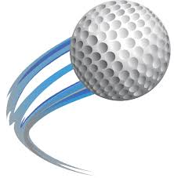
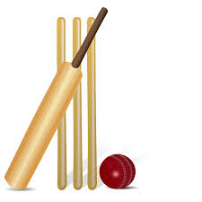

|  |
Golf ClubGolf is a club-and-ball sport in which players use various clubs to hit balls into a series of holes on a course in as few strokes as possible. ... The game at the usual level is played on a course with an arranged progression of 18 holes, though recreational courses can be smaller, often having nine holes. |
|---|---|
 |
Football ClubA football team is a group of players selected to play together in the various team sports known as football. Such teams could be selected to play in a match against an opposing team, to represent a football club, group, state or nation, an all-star team or even selected as a hypothetical team (such as a Dream Team or Team of the Century) and never play an actual match. |
|  |
Cricket ClubThe club still cherishes the pride of having one of the best cricket grounds in the city. The mark of the British is also an added heritage of the club. Currently we have a new lit practice facility of 22 practice wickets including 9 wickets with box nets. The playing field and pitch are planted with Bermuda grass which grows faster and makes for speedier and competitive play. This is supported by popup sprinklers that help maintaining the water requirements of the grass and all this to meet international standards. |
 |
Volleyball ClubVolleyball is a popular team sport in which two teams of six players are separated by a net. Each team tries to score points by grounding a ball on the other team's court under organized rules. It has been a part of the official program of the Summer Olympic Games since Tokyo 1964. |